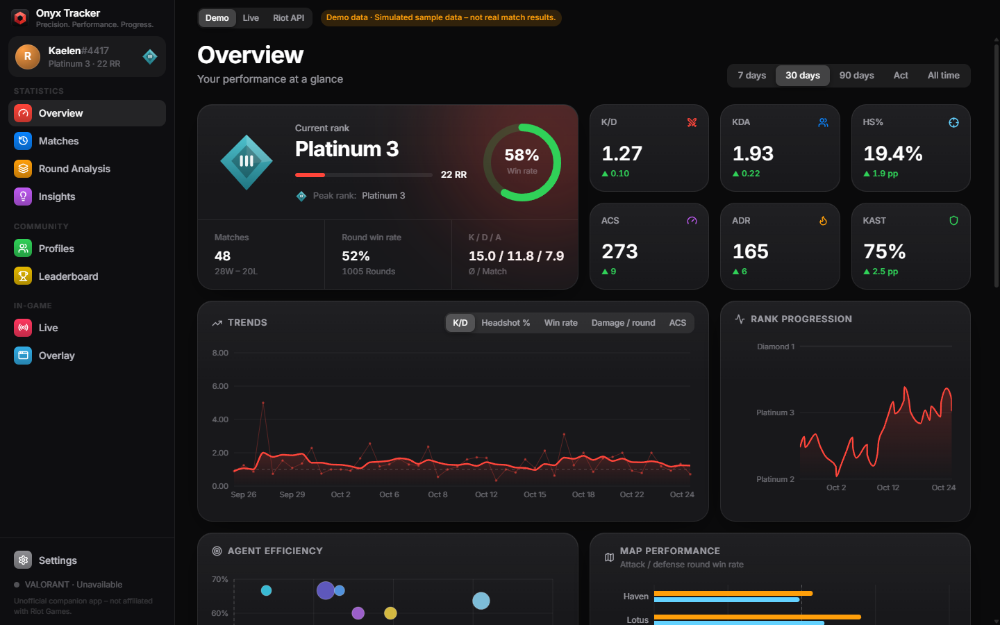
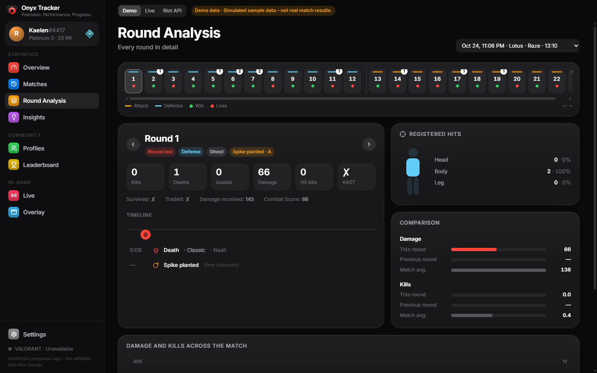
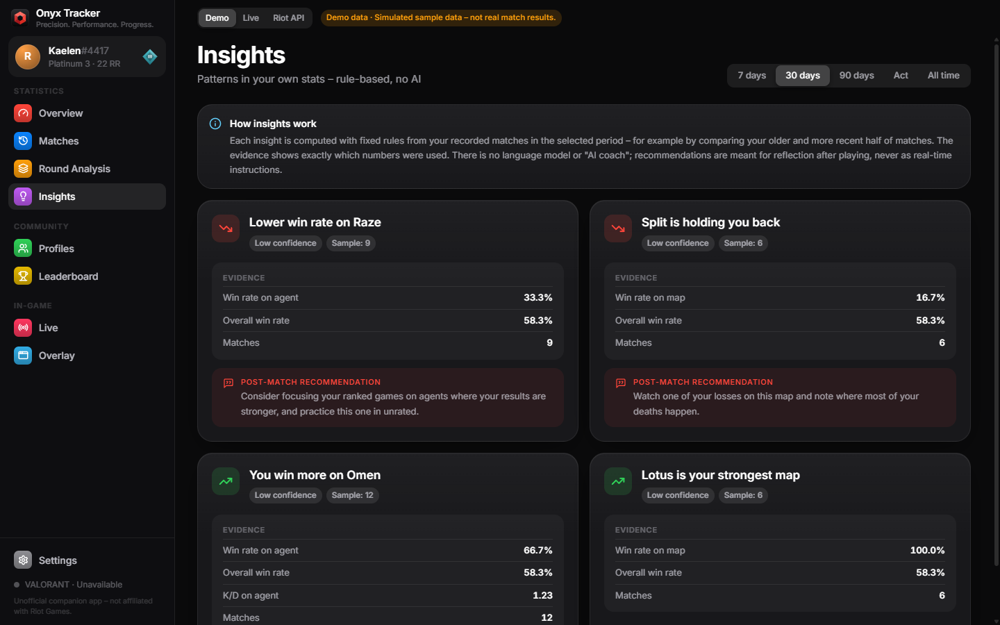
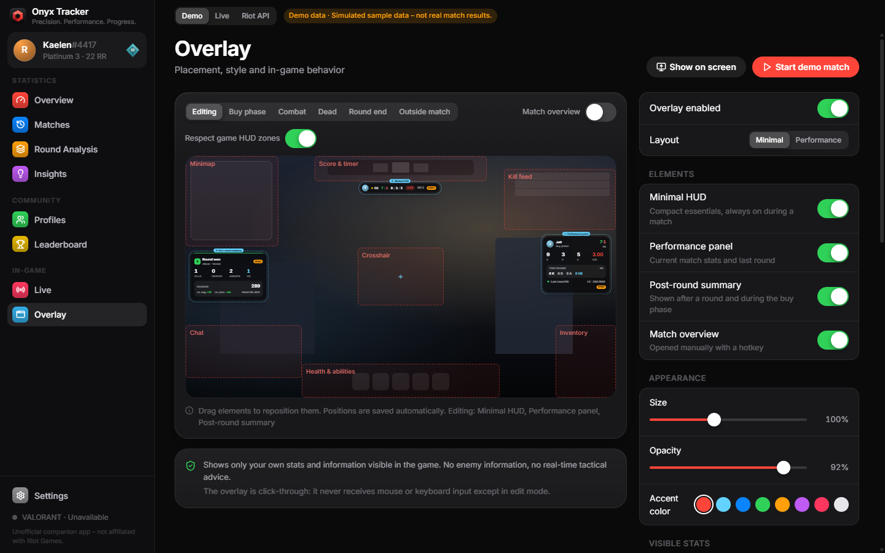
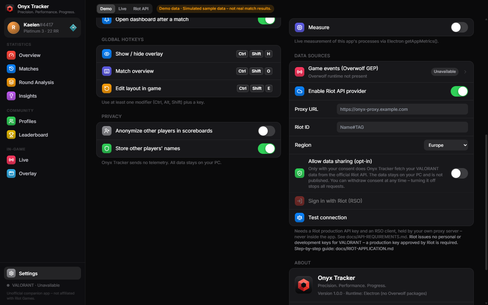

Precision. Performance. Progress.
Onyx Tracker shows you how you actually played – match by match and round by round. Review your own games after you play, spot real patterns and keep track of your progress.
Onyx Tracker is not endorsed by Riot Games. Screenshots show the built-in demo mode with fictional players.

Built for reviewing your own games
Every number is calculated from your own matches. Missing data stays missing – the app never fills gaps with guesses.
Every round, in detail
Step through a match round by round: outcome, side, weapon, kills, deaths and assists, damage, registered head, body and leg hits, and a timeline of what happened. Each round is compared with the previous one and with your match average.

Insights with their evidence
Rule-based insights point out real patterns – a rising headshot rate, a weaker map, a gap between attack and defense. Each one lists the exact numbers and sample size behind it. There is no AI coach, and suggestions are meant for after the match.

A quiet in-game overlay
An optional overlay shows your own score, round and K/D/A. Your damage appears only after the round report arrives. It stays click-through, keeps the minimap, kill feed, crosshair and abilities clear, and you can position it with a visual editor.

Reflection, not real-time advantage
Onyx Tracker follows Riot's rules for third-party products. It is a training and reflection tool for your own data.
Shows
- Your own stats, match history and round analysis
- Score, round and phase that the game already shows you
- Your damage after the round report has arrived
- The official ranked leaderboard
Never shows
- Enemy positions, economy, weapons or ultimates
- Tactical prompts or callouts during a round
- Opponent scouting before or during a match
- MMR or ELO estimates, or hidden players' identities
Nothing is fetched until you opt in
Riot API features are off by default. Your data stays on your PC, nothing is published, and there is no telemetry.
- Enable the Riot data sourceIn Settings → Data sources. Until then the app works with locally recorded or demo data only.
- Turn on "Allow data sharing (opt-in)"The switch explains what is fetched. Turning it off stops every request immediately.
- Sign in with RiotRiot Sign On opens in your browser. Onyx Tracker never sees or stores your Riot password, and it only requests your own matches.

| Riot API | Used for |
|---|---|
ACCOUNT-V1 | Your Riot ID after you sign in with Riot Sign On |
VAL-MATCH-V1 | Your own match list and match details – never other players' histories |
VAL-CONTENT-V1 | Names of agents, maps and equipment |
VAL-RANKED-V1 | The official leaderboard; anonymized players stay anonymous |
Onyx Tracker for Windows
Windows 10 and 11, 64-bit. Includes a demo mode, so you can explore everything without playing a match.